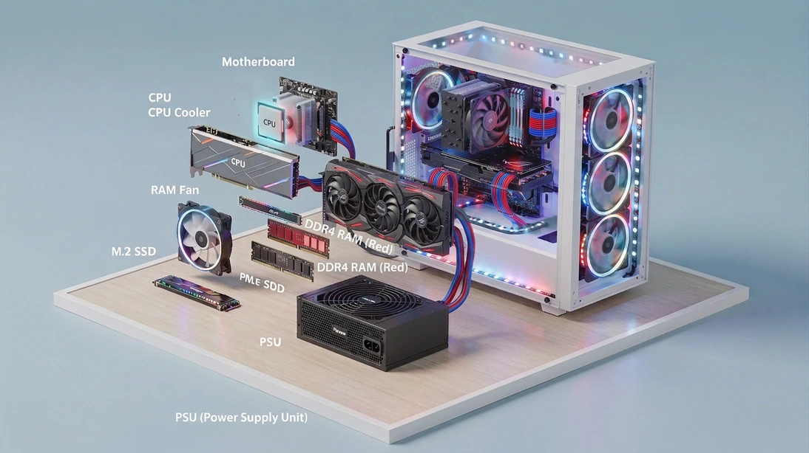
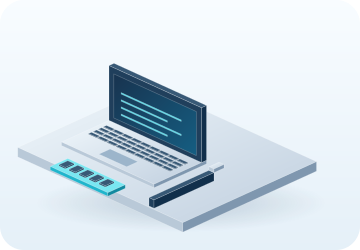
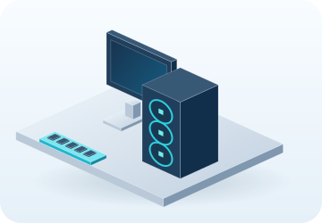
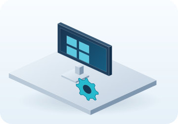

1. Describe the problem
Include your location, device make and model, symptoms and when they started. Tell us about any important files before work begins.


Technology with personal support
We assess faults, slowdowns and operating problems; repair and maintain laptops and desktops; install compatible SSDs and memory; and configure systems, applications, printers and networks. We also help protect and organise files, migrate data and assess recovery options, without guaranteeing outcomes that depend on the condition of the storage media. For local businesses, we offer websites, hosting, SSL certificates and maintenance, with the scope defined in the proposal.
Service areas: Cascais, Estoril, Parede, Carcavelos, Alcabideche, Manique, Tires, São Domingos de Rana, Sintra, Oeiras, Carnaxide, Algés and Lisboa. Visits are scheduled and confirmed in advance. Outside these areas, we can assess whether remote support is suitable.
Request an assessment
IT services
Explore the work we can assess for your laptop, desktop or network. On-site assistance from Cascais to Lisbon and remote support are arranged in advance.

We assess startup failures, freezes, slow performance, charging issues and irregular operation. Work depends on the model and condition of the device.
Parts and availability depend on the model and diagnosis. Advanced repairs are assessed individually.
Request a quote
We support desktop computers and help define a setup suited to work, study or home use.
Components are chosen according to compatibility, device condition and quote approval.
Request a quote
We help organise networks and improve wireless coverage in homes and small offices. We assess the premises, equipment and symptoms before recommending changes.
Coverage and speed also depend on the premises, devices and internet provider.
Request a quote
We configure systems and applications for organised use. Before reinstalling or formatting, we agree how existing files will be handled.
Licences, subscriptions and backups are specified in the quote. Do not enter passwords in the form.
Request a quote
We help identify unwanted software and establish file-protection routines tailored to how the device is used.
No solution guarantees absolute protection or recovery of every file. Backups should be checked regularly.
Request a quote
We help transfer files and solve issues that can be handled remotely. For data loss, we assess the situation first.
Data recovery is not guaranteed. Remote access requires consent and does not replace necessary physical work.
Request a quote
Fast websites for local businesses, with hosting, SSL certificate and maintenance included in a monthly plan. Technical support to keep your website running smoothly.
Content, changes, domain name and plan terms are specified in the quote. No monthly price is listed on this page.
Request a proposal →Provide the equipment brand and model, describe the problem and tell us your location. The assessment, any applicable diagnosis or travel costs, and the intervention terms are agreed before proceeding. Components, licences and extra services depend on the approved quote.
Include your location, device make and model, symptoms and when they started. Tell us about any important files before work begins.
We assess whether a home visit or remote support is suitable and explain the appointment arrangements and applicable terms before proceeding.
We explain the options and scope of the work. Repairs, parts, upgrades and additional services depend on an assessment and your approval.
Equipment, component and software brands we work with
Names and logos belong to their respective owners and do not imply partnership or affiliation.